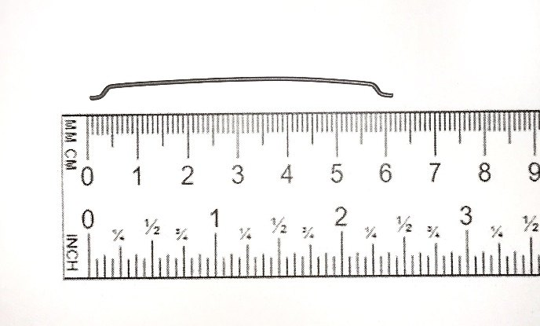
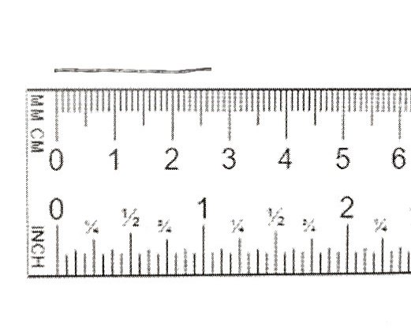
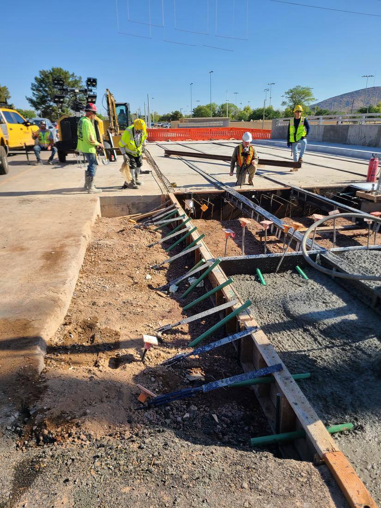
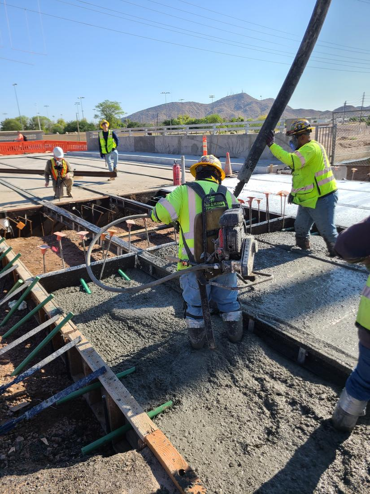
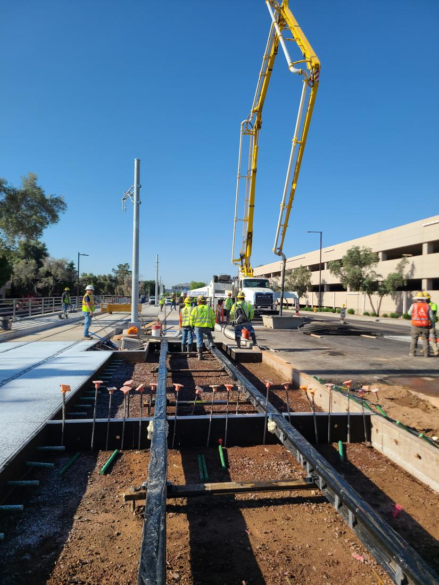
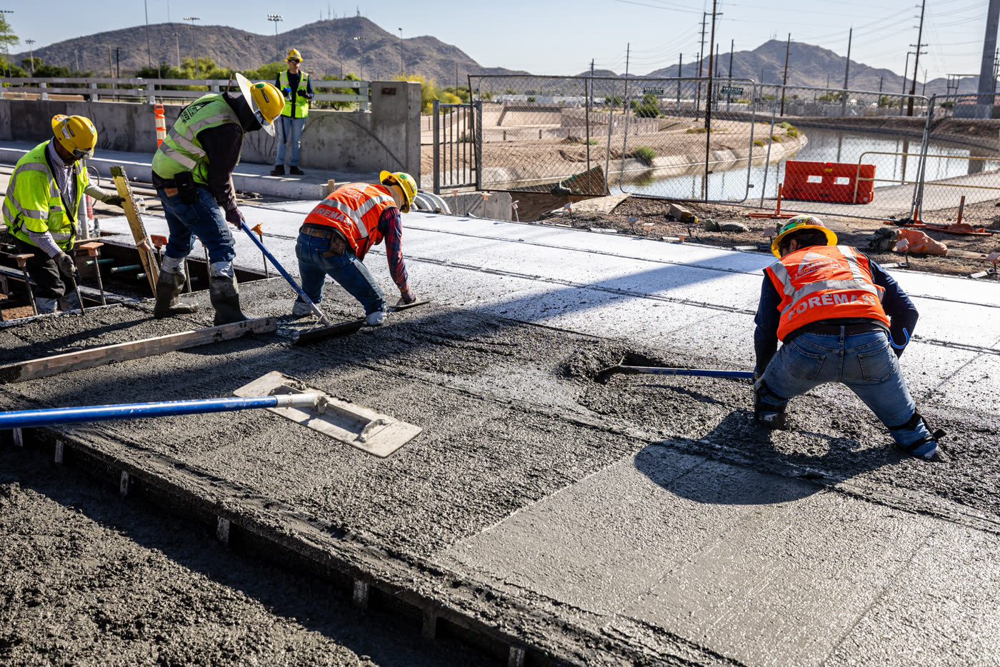
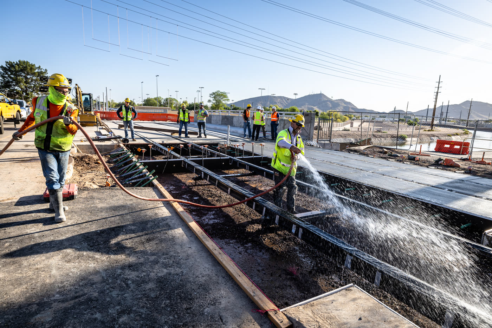
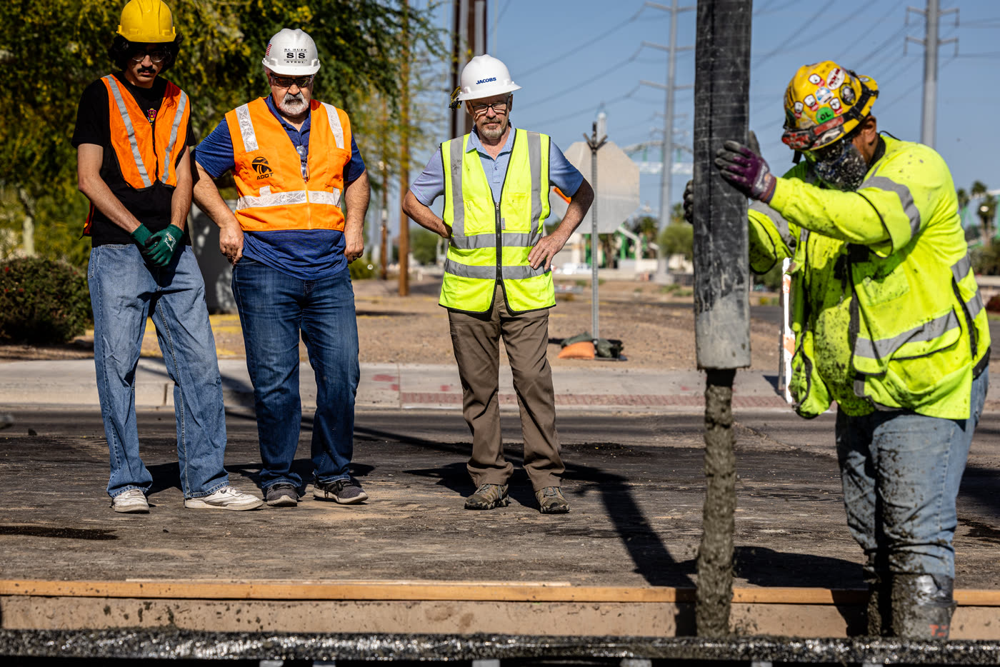

Valley Metro Northwest Extension Phase II
This 12 inch slab carries a rail but no rebar, only hooked steel fibers. After one load cracked it, the slab was pushed down two million times at 4 Hz, the crack opening and closing with every cycle, and it lost 8.4% of its stiffness. The same fiber mix now forms the track slab of the Valley Metro Northwest Extension Phase II in Phoenix.
Load, deflection and stiffness are the laboratory records of slab SFRC2_#2, tested at ASU in August 2019. The strain band and the crack width are the DIC of the same slab, from the recorded burst nearest the cycle count. Deformation is magnified, and the laboratory around the slab is drawn for illustration.
- 2,000,000load cycles at 4 Hz, 0 to 18 kips (80 kN) on the rail
- 8.4%stiffness lost over those cycles, 178 to 163 kip/in (31 to 28.5 kN/mm)
- $12.1 Msaved per mile of track against the rebar design, 69% of its cost
- 110 daysless construction per mile, 121 days against 231
Camera and DIC record
A camera above the slab filmed the rig running, and a second camera filmed the speckle pattern on the side face at 800 frames a second, in nine bursts spread over the two million cycles. Correlated, those images show one crack that opens and closes with every cycle. From 250,000 cycles on it opened 0.84 to 0.87 mm at the soffit under 16 kips, and it neither grew upward nor ratcheted open before the test ended.

Hooked steel fibers instead of rebar
Two steel fibers were tested in full-size slabs. The 25 mm twisted fiber at 15 kg/m³ (0.2% by volume) could not hold its crack, and its fatigue test stopped after 70,000 cycles. The 60 mm hooked fiber at 39 kg/m³ (0.5%) carried the two million, so the hooked mix went into the track.


Northwest Extension Phase II, Phoenix
The extension carries the line 1.6 miles from 19th Avenue and Dunlap across I-17 to Metro Parkway, with three new stations. It opened on January 27, 2024, a year ahead of its planned 2025 opening, and finished 2.3% under budget with more than $6.5 million of contingency left.
Track slab placed without rebar
Without rebar the crews no longer cut, tied and welded cages, or tested the welds for stray-current continuity. The field cost data put the in-place slab at $1,013 per track foot against $3,309 for the rebar design, and one mile of track took 121 days instead of 231, with 187,740 lb of hooked fiber replacing 482,000 lb of bars in each mile.



The hooked-fiber track slab going in on the Northwest Extension, May 5, 2023.



Role of the group
The group proposed replacing the two cross-directional rebar mats of a conventional light rail track slab with steel fiber reinforced concrete for the Valley Metro Northwest Extension Phase II, a 1.6 mile extension on 25th Avenue crossing Interstate 17 to the former Metrocenter Mall site, including the first elevated station on the system.
The design was validated in the ASU Structural and Materials Laboratory with full-size track slab mock-ups and a fatigue program of 2 million load cycles, simulating 45 years of train traffic. The tests demonstrated the required service life even with cracked slabs. Both steel and polypropylene fibers were evaluated, and Valley Metro selected steel fibers, which removed rebar from the track slab entirely.
In the field the slab thickness was reduced from 14.5 to 12 inches. The final fiber reinforced concrete track slab was placed on May 5, 2023, and the extension opened on January 27, 2024.
Devansh Patel led the experimental testing program and Chidchanok Pleesudjai contributed to the fatigue campaign. Valley Metro has stated it plans to use FRC on future rail projects, and transit agencies in Montreal and Turin have expressed interest in the approach.
- Location
- Phoenix, Arizona
- Years
- 2019-2024
- Partners
- Valley Metro
Kiewit Infrastructure West Co. and McCarthy Building Companies (joint venture)
Jacobs
Arizona State University - Software
- HRC Designer
Awards to the project team
- Best of the Best Project, Airport/TransitEngineering News-Record, national, 2024
- U.S. Project of the Year, finalist (one of three)Engineering News-Record, national, 2024
- Southwest Region Project of the YearEngineering News-Record, 2024
- Southwest Best Project, Airport/TransitEngineering News-Record, 2024
- Southwest Excellence in Safety AwardEngineering News-Record, 2024
- Large Construction Project of the YearNational Railroad Construction and Maintenance Association, 2024
- Build Arizona Award, New Construction Over 50MAssociated General Contractors, Arizona chapter, 2025
- Innovative Transportation Solutions AwardWTS International, Metropolitan Phoenix Chapter, 2025
- Engineering Excellence Honor AwardAmerican Council of Engineering Companies, 2025
- Marvin M. Black Excellence in Partnering and Collaboration, Build America AwardsAssociated General Contractors of America, 2025
Articles and talks
- ASU News, ASU-designed fiber-reinforced concrete speeds Phoenix rapid transit construction (2023)
- ASCE Civil Engineering magazine, article by Prof. Mobasher (2024)
- KJZZ, Rebar is out, fiber is in (2023)
- Jacobs newsroom, project awards (2025)
- Fatigue Evaluation of Light-Rail Fiber-Reinforced Concrete Track Slabs, ACI talk, June 2025
- D. Patel, C. Pleesudjai, A. Haines, T. Santana and B. Mobasher, Implementation of Fiber-Reinforced Track Slabs in Light-Rail Systems, manuscript in review. Test results, fiber mixes and field cost data.
- ASU Structural Engineering Laboratory, Structural Testing and Design Verification of Fiber Reinforced Concrete Structural Slabs for Phoenix Metro Light Rail, final report to Kiewit McCarthy JV, February 2020. Test records and photographs.
- DIC reduction of the side-face images of slab SFRC2_#2, nine bursts from 1,000 to 2,020,000 cycles, 2026. Strain maps, crack path and crack width at the soffit.
- Valley Metro, Northwest Extension Phase II fact sheet, March 2024. Hill International, Northwest Extension Phase II project page. Schedule and budget.
- USDA National Agriculture Imagery Program, USGS 3D Elevation Program, ADOT 2024 Average Annual Daily Traffic, Valley Metro GTFS (City of Phoenix open data) and OpenStreetMap contributors. Map layers.